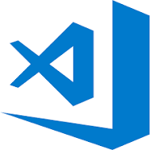
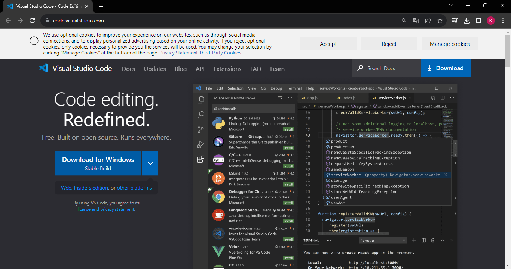

O Visual Studio Code é um editor de código-fonte desenvolvido pela Microsoft para Windows, Linux e macOS.
Ele
inclui suporte para depuração, controle de versionamento Git incorporado, realce de sintaxe, complementação
inteligente de código, snippets e refatoração de código
Link do site do VSCODE: Clique aqui ou na
imagem
Ao entrar no link voce será redirecionado para a seguinte pagina:

-caso queira configurar seu VSCODE clique na imagema abaixo: